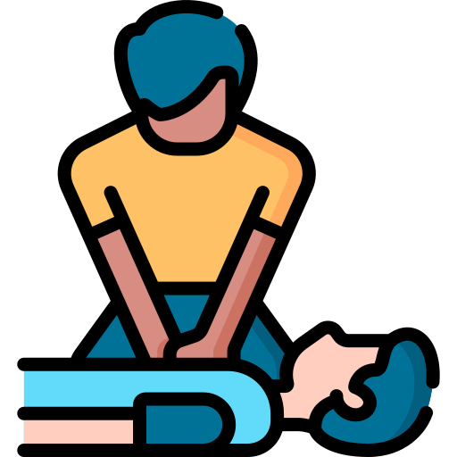

Apolline Ponce
En reconversion dans le développement
Suite à un bac+5 dans l'environnement, je suis à la recherche d'une alternance qui me permettra d'acquérir les qualifications nécessaires pour accéder à un emploi dans le développement.
En apprendre plus sur...
Contactez-moi
Mes compétences
LANGUES
Anglais C1 (TOIEC 980)
Espagnol A2
Japonais A2
- Notions de base dans l'HTML, CSS et JavaScript
-
PAO : Canva, Prezi. Maîtrise Pack Office, Figma


-
Analyses unies et multivariées (Notions Rstudio)
-
Logiciels vidéo, son et image (Open shot, Audacity, GIMP)

-
Prévention et secours civiques de niveau 1
Mes expériences professionnelles
{kind=link}
2017 | Stage Inventaire Faune | Association LUS
1 mois et demi, inventaire faunistique du Grau-du-Roi dans le cadre de l'Atlas de Biodiversité Communale (ABC). Polyvalence, organisation de protocoles. Inventaires (odonates, mammifères, orthoptères...)
2018 | Stage de Recherche | ISEM
1 mois et demi, laboratoire avec une équipe de recherche sur la reconnaissance de soi chez Papio ursinus. Travail en équipe, recherche bibliographique, organisation base de données, analyses statistiques.
{kind=link}
{kind=link}
2019 | Stage de recherche | GRECA
2 mois en centre de recherche. Prédation nichoirs de Cyanistes caeruleus ogliastra selon caractéristiques environnementales. Analyse vidéo de test en open field, analyses statistiques sur R, création GLM.
2021 | Stage M1 | BE Synergis Environnement
4 mois et demi en bureau d'études. Suivi mortalité avifaune et chiroptères, comparaison de méthodes pour estimer l'activité de chiroptères au sol. Rédaction, travail bibliographique, terrain en autonomie, initiation au traitement acoustique des chiroptères en expansion de temps.
{kind=link}
{kind=link}
2022 | Stage M2 | Bureau d'études ECO-MED
6 mois en bureau d'études. Élaboration d'un protocole d'inventaire de chiroptères avec caméra infrarouge. Comparaison de méthodes de comptage en sortie de gîte. Rédaction, mise en place d'une étude, travail bibliographique, terrain de nuit et utilisation de matériel technique adapté.
Formation
2023 | Projet Pro | SUPDEC
Formation sur 3 mois pour déterminer mon projet professionnel dans le numérique. Cours Codecademy et Openclassrooms sur Linux, Réseaux TCP/IP, HTML, CSS, JavaScript, Figma et Git/GitHub.
2020-2022 | Master IEGB
Ingénierie en Écologie et Gestion de la Biodiversité (IEGB). Cursus de Master en Ingénierie Écologue Naturaliste (CMI IEN).
Université de Montpellier
2019-2020 | Année de Césure
Voyage de 10 mois et demi au Japon, où j'ai pu travailler de nuit pendant 2 mois dans une entreprise Japonaise.
2016-2018 | Licence EBO
Licence en Écologie et Biologie des Organismes (EBO). 3ème année en échange universitaire au Canada à Montréal (UQAM).
Université de Montpellier
Bénévolat et loisirs
2019 | Conception d’une revue étudiante et publication
Membre du comité de correction d'une revue de vulgarisation étudiante. Rédaction en équipe et publication de mon article de vulgarisation dans
Le Point Biologique.